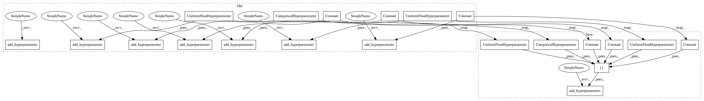

8565a366de87d82dc19c3386b4a83359be1aa275,autosklearn/pipeline/components/classification/liblinear_svc.py,LibLinear_SVC,get_hyperparameter_search_space,#Any#,87
Before Change
def get_hyperparameter_search_space(dataset_properties=None):
cs = ConfigurationSpace()
penalty = cs.add_hyperparameter(CategoricalHyperparameter(
"penalty", ["l1", "l2"], default="l2"))
loss = cs.add_hyperparameter(CategoricalHyperparameter(
"loss", ["hinge", "squared_hinge"], default="squared_hinge"))
dual = cs.add_hyperparameter(Constant("dual", "False"))
// This is set ad-hoc
tol = cs.add_hyperparameter(UniformFloatHyperparameter(
"tol", 1e-5, 1e-1, default=1e-4, log=True))
C = cs.add_hyperparameter(UniformFloatHyperparameter(
"C", 0.03125, 32768, log=True, default=1.0))
multi_class = cs.add_hyperparameter(Constant("multi_class", "ovr"))
// These are set ad-hoc
fit_intercept = cs.add_hyperparameter(Constant("fit_intercept", "True"))
intercept_scaling = cs.add_hyperparameter(Constant(
"intercept_scaling", 1))
penalty_and_loss = ForbiddenAndConjunction(
After Change
def get_hyperparameter_search_space(dataset_properties=None):
cs = ConfigurationSpace()
penalty = CategoricalHyperparameter(
"penalty", ["l1", "l2"], default="l2")
loss = CategoricalHyperparameter(
"loss", ["hinge", "squared_hinge"], default="squared_hinge")
dual = Constant("dual", "False")
// This is set ad-hoc
tol = UniformFloatHyperparameter(
"tol", 1e-5, 1e-1, default=1e-4, log=True)
C = UniformFloatHyperparameter(
"C", 0.03125, 32768, log=True, default=1.0)
multi_class = Constant("multi_class", "ovr")
// These are set ad-hoc
fit_intercept = Constant("fit_intercept", "True")
intercept_scaling = Constant("intercept_scaling", 1)
cs.add_hyperparameters([penalty, loss, dual, tol, C, multi_class,
fit_intercept, intercept_scaling])
penalty_and_loss = ForbiddenAndConjunction(
ForbiddenEqualsClause(penalty, "l1"),
ForbiddenEqualsClause(loss, "hinge")
In pattern: SUPERPATTERN
Frequency: 3
Non-data size: 21
Instances
Project Name: automl/auto-sklearn
Commit Name: 8565a366de87d82dc19c3386b4a83359be1aa275
Time: 2017-02-04
Author: feurerm@informatik.uni-freiburg.de
File Name: autosklearn/pipeline/components/classification/liblinear_svc.py
Class Name: LibLinear_SVC
Method Name: get_hyperparameter_search_space
Project Name: automl/auto-sklearn
Commit Name: 8565a366de87d82dc19c3386b4a83359be1aa275
Time: 2017-02-04
Author: feurerm@informatik.uni-freiburg.de
File Name: autosklearn/pipeline/components/feature_preprocessing/liblinear_svc_preprocessor.py
Class Name: LibLinear_Preprocessor
Method Name: get_hyperparameter_search_space
Project Name: automl/auto-sklearn
Commit Name: 8565a366de87d82dc19c3386b4a83359be1aa275
Time: 2017-02-04
Author: feurerm@informatik.uni-freiburg.de
File Name: autosklearn/pipeline/components/classification/liblinear_svc.py
Class Name: LibLinear_SVC
Method Name: get_hyperparameter_search_space
Project Name: automl/auto-sklearn
Commit Name: 8565a366de87d82dc19c3386b4a83359be1aa275
Time: 2017-02-04
Author: feurerm@informatik.uni-freiburg.de
File Name: autosklearn/pipeline/components/regression/liblinear_svr.py
Class Name: LibLinear_SVR
Method Name: get_hyperparameter_search_space